The shape of a circus tent is determined by a constrained optimization problem. We can solve this problem with the large-scale optimization functionality in the Optimization Toolbox
Imagine building a circus tent to cover a square lot. The tent has five poles that will be covered with an elastic material. From this structure, we want to find the natural shape of the tent. This natural shape corresponds to the minimum of a certain energy function computed from the surface position and squared norm of its gradient.
% Draw the tent poles. largeL = zeros(36); mask = [6 7 30 31]; largeL(mask,mask) = .3*ones(4); largeL(18:19,18:19) = .5*ones(2); xx = [1:5,5:6,6:15,15:16,16:25,25:26,26:30]; [XX,YY] = meshgrid(xx) ; axis([1 30 1 30 0 .5],'off'); surface(XX,YY,largeL,'facecolor',[.5 .5 .5],'edgecolor','none'); light; colormap(gray); view([-20,30]); title('The set of tent poles')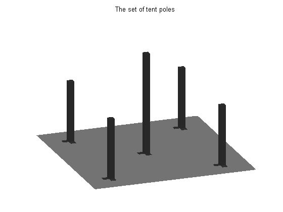
The supporting poles determine a lower bound for the tent, L. We can visualize the constraint by plotting it as a magenta mesh.
L = zeros(30); E = ones(2); L(15:16,15:16) = .5*E; L(5:6,5:6) = .3*E; L(25:26,5:6) = .3*E; L(5:6,25:26) = .3*E; L(25:26,25:26) = .3*E; % Add L to the plot. surface(L,'facecolor','none','edgecolor','m'); title('Lower Bound Constraint Surface')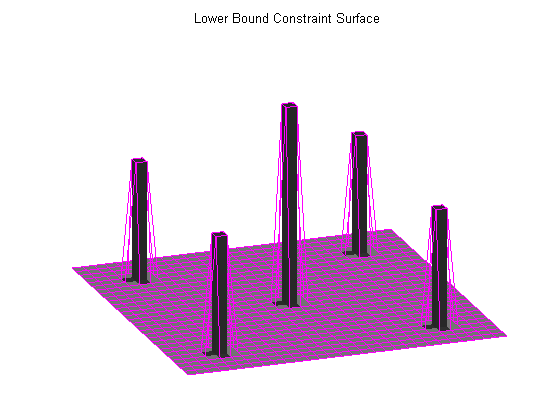
To solve this problem, we will find the height of the optimized surface at a finite number of points. Our initial guess, sstart, is shown in blue.
sstart = .5*ones(30,30); % Add it to the plot. surface(sstart,'FaceColor','none','LineStyle','none', ... 'Marker','.','MarkerEdgeColor','blue') title('Initial Value (blue) and Lower Bound (magenta)'); set(gcf,'renderer','zbuffer'); % Markers do not show up in OpenGL.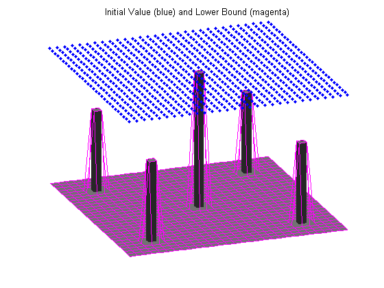
In order to formulate the problem as a standard optimization problem, we resize both the matrices into vectors. L representing the initial values and sstart representing the lower boundary constraint.
low = reshape(L,900,1); xstart = reshape(sstart,900,1); % Illustrate the reordering. % Draw grid points. xx = 0:4; [X Y] = meshgrid(xx,xx); gpts = plot(X(:),Y(:),'b.'); set(gpts,'markersize',10); axis off; axis([-2 12 -1.5 5.5]); hold on % Draw arrow. l(1) = line([7.5 6.5],[2 2.5]); l(2) = line([7.5 6.5],[2 1.5]); l(3) = line([7.5 5.5],[2 2]); set(l,'color','b'); % Draw vector. yy = 0.2*xx; zz = [-1.5+yy,yy,1.5+yy,3+yy,4.5+yy]; vect = plot(9*ones(25,1),zz,'b.'); set(vect,'markersize',9); axis off; hold off;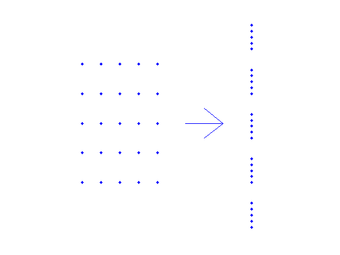
The surface formed by the elastic membrane is determined by the linearly constrained optimization problem
min{ c'*x+0.5*x'*H*x : low <= x }where c'*x + 0.5*x'*H*x is the discrete approximation of the energy function. H and c are as follows:
H = delsq(numgrid('S',30+2));
h = 1/(30-1);
c = -h^2*ones(30^2,1);
Each point of the energy function is only affected by its immediate neighbors. Consequently the Hessian matrix H is sparse and has a special structure.
Because H is sparse we can use a large-scale algorithm to solve the optimization problem.
spy(H);
title('Structure of Hessian Matrix');
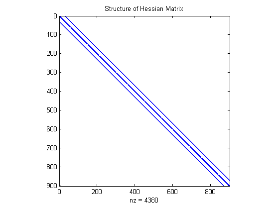 It will take about 14 iterations to solve this problem. At each iteration a progress information window will be updated. Before starting the optimization, we will look at the two plots found in the window.
Here is an example of the first plot. Each component is plotted against its position relative to the lower and upper bounds. If a component is at any of its bounds it is plotted in red. Otherwise, it is strictly between its bounds and plotted in blue.
% Draw a sample version of the X-G plot. load tentdata; plot(xXX3,XX3,'b.',xXX1,XX1,'r.',xXX2,XX2,'r.'); set(gca,'YTick',[-1 1]); set(gca,'YTickLabel',{'lower';'upper'}); axis([1 900 -1 1]); title('Relative position of x(i) to upper and lower bounds (log-scale)');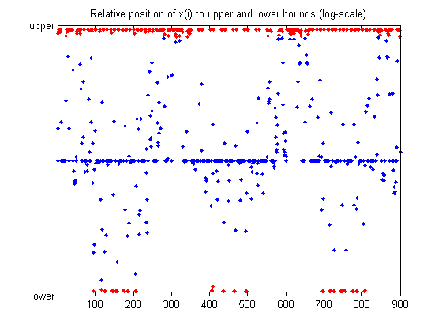
Here is an example of the second plot found on the status window. The second plot shows the normalized components of the gradient g. The components that are close to zero (within a certain tolerance) are plotted in red. The rest are plotted in blue.
% Show a sample version of the G plot. currplot = plot(xGG2,GG2,'b.',xGG1,GG1,'r.'); title('Relative gradient scaled to the range -1 to 1'); legend('abs(grad) > tol','abs(grad) <= tol',4); axis([1 900 -1 1]); set(gca,'YTick',[-1 0 1]); ylabel('gradient')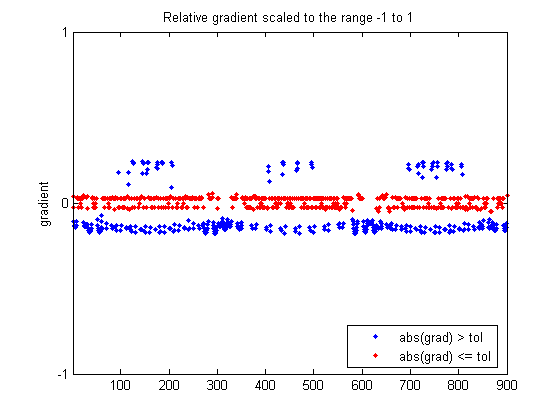
Set the options with OPTIMSET. Then solve the problem by using the routine QUADPROG.
options = optimset('LargeScale','on','display','off', ... 'ShowStatusWindow','iterplus'); x = quadprog(H, c, [], [], [], [], low, [], xstart, options);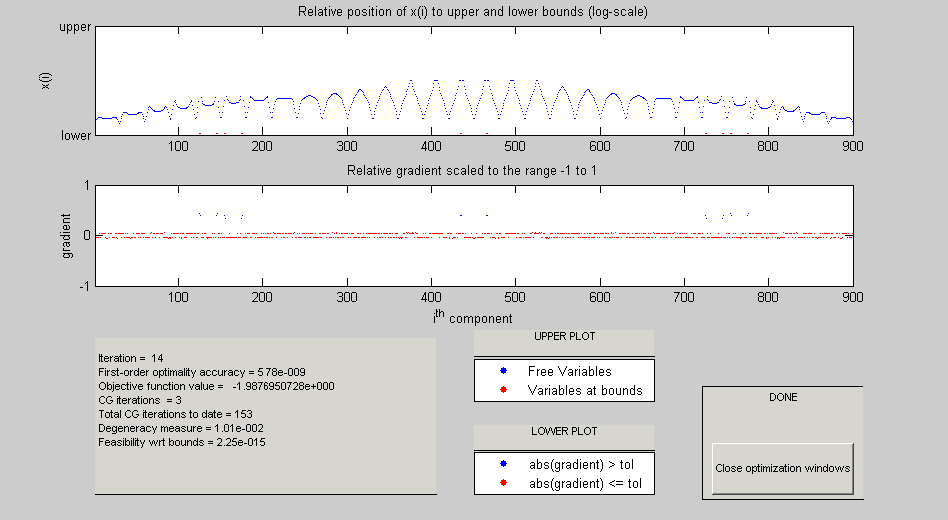 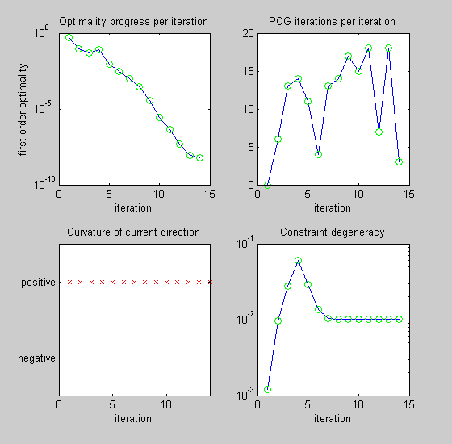
Now obtain the surface solution by going back to the original ordering using RESHAPE. Then plot this solution in blue mesh.
S = reshape(x,30,30); % Close figures that QUADPROG creates (if they are still open). delete(findobj(0,'Name','Algorithm Performance Statistics')) delete(findobj(0,'Name','Progress Information')) % Plot the starting surface. subplot(1,2,1); surf(L,'facecolor',[.5 .5 .5]); surface(sstart,'edgecolor','b','facecolor','none'); title('Starting Surface') axis off axis tight; view([-20,30]); % Plot the solution surface. subplot(1,2,2); surf(L,'facecolor',[.5 .5 .5]); surface(S,'edgecolor','b','facecolor','none'); title('Solution Surface') axis off axis tight; view([-20,30]);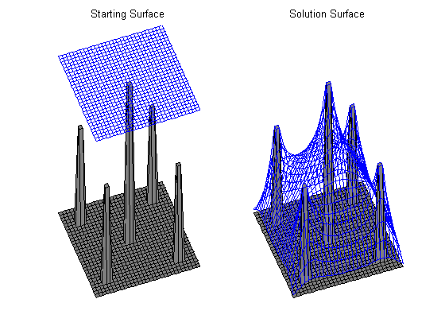
Let's see the circus tent.
subplot(1,1,1) surf(L,'facecolor',[0 0 0]); hold on; surfl(S); hold off; axis tight; axis off; view([-20,30]);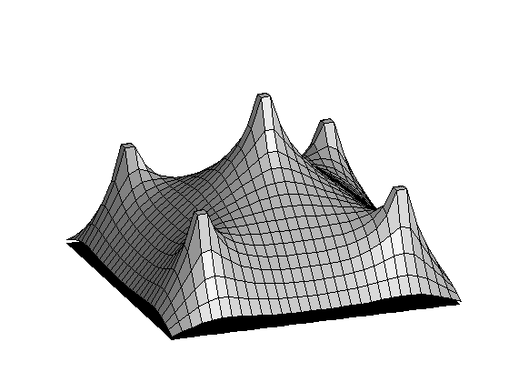